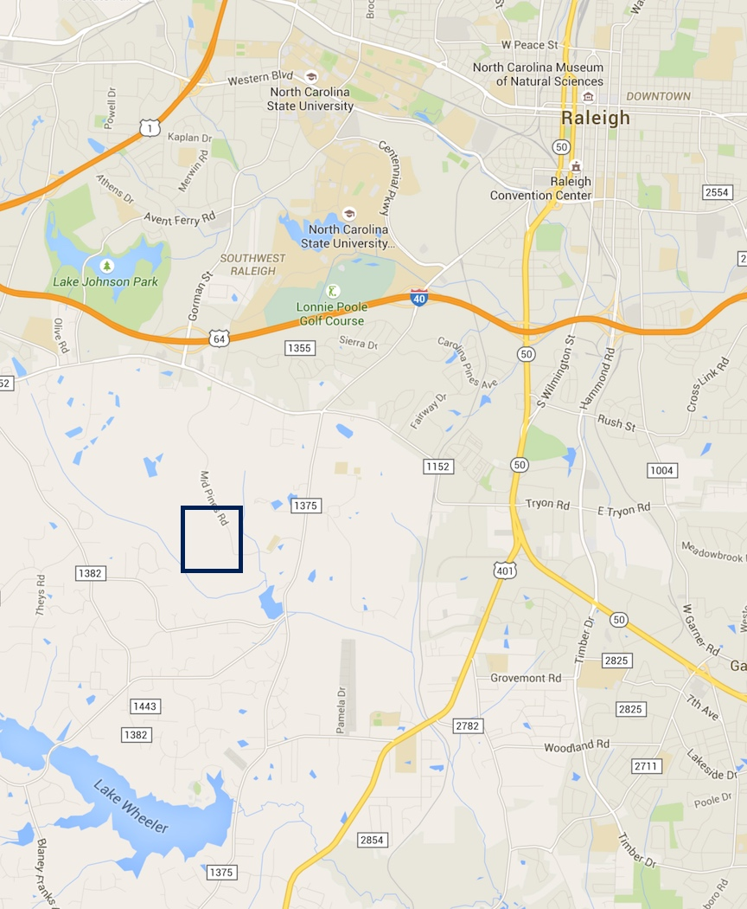
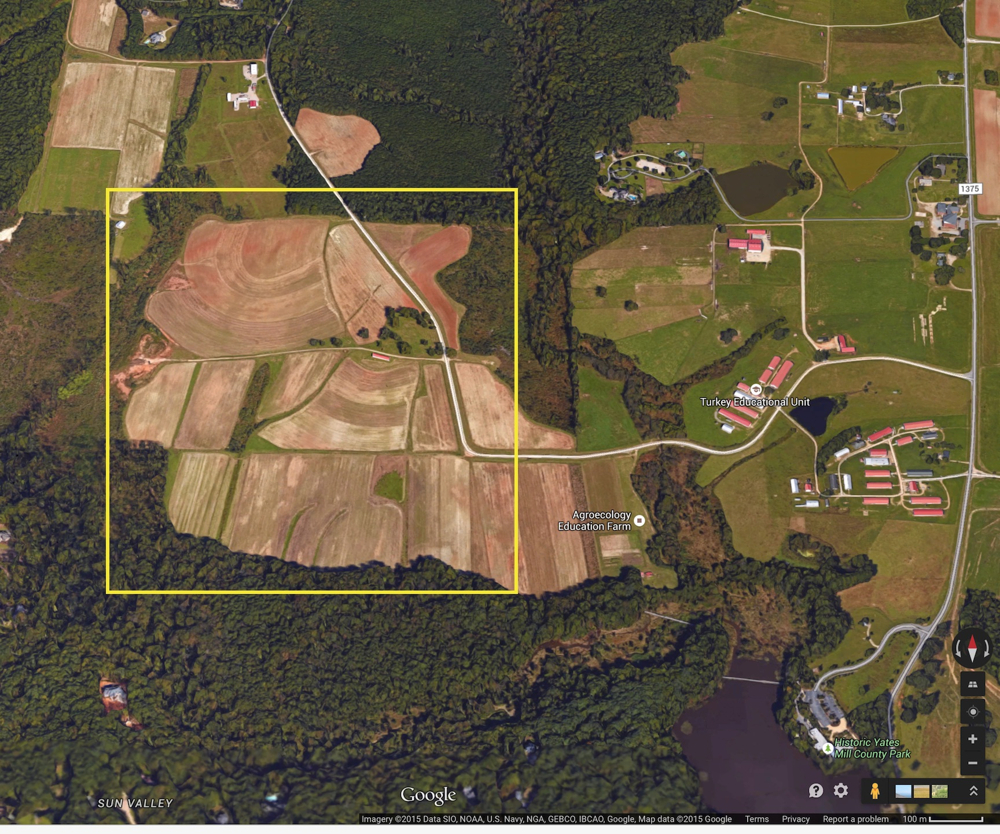
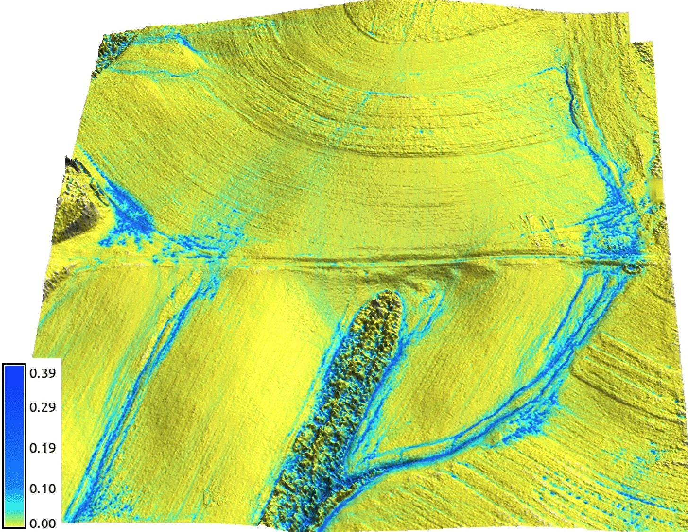
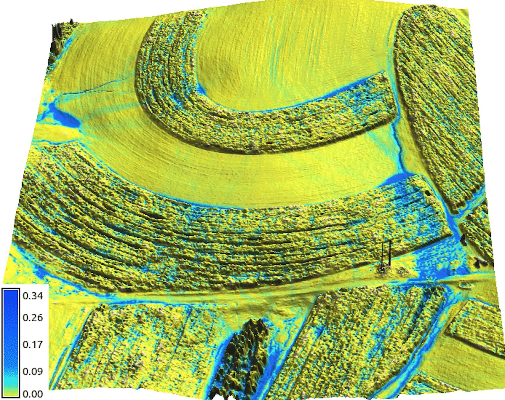
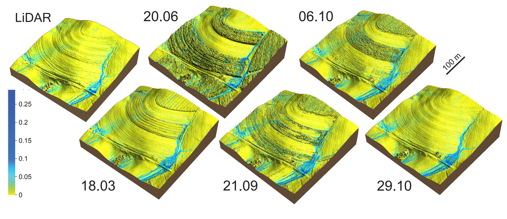
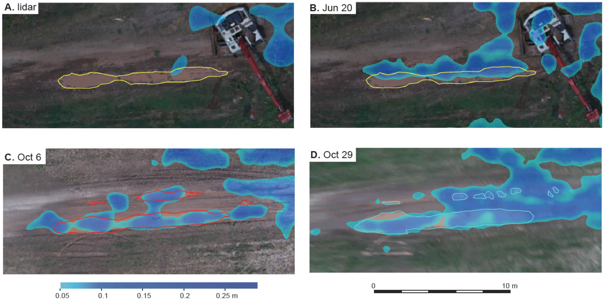
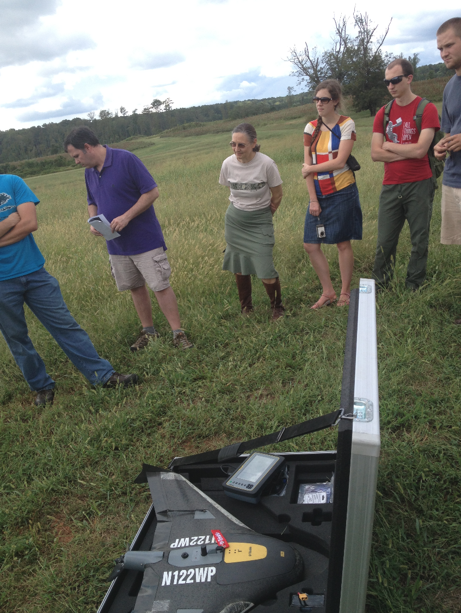
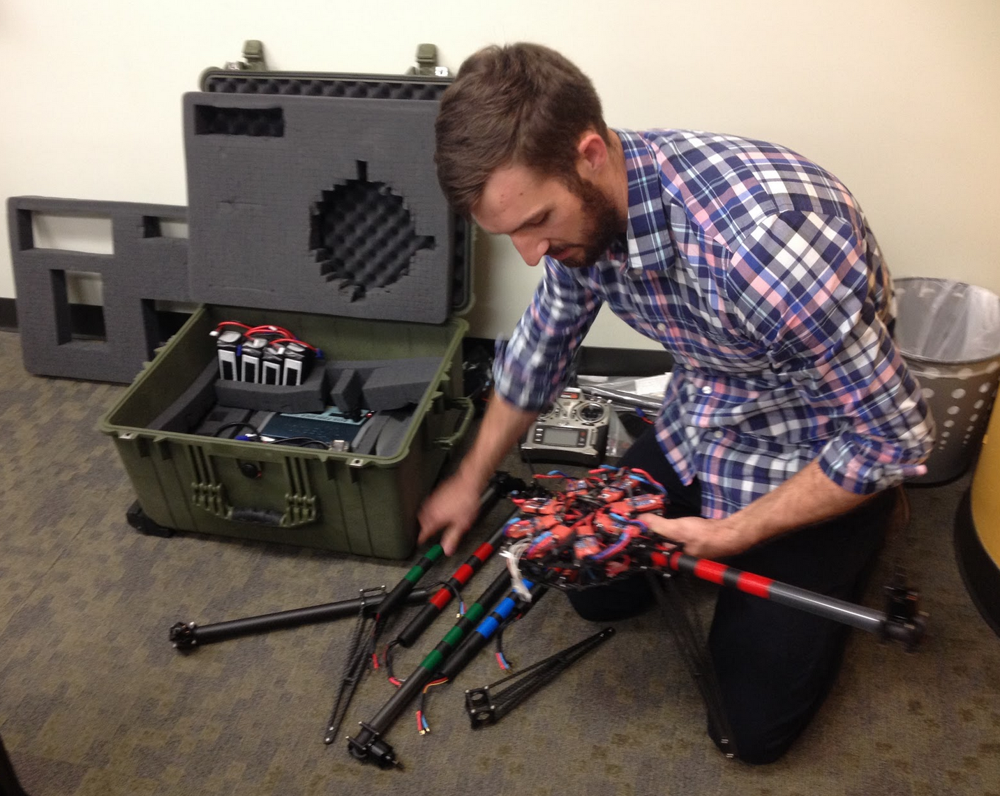

UAS for Geosciences
Justyna Jeziorska
Inia Justyna Jeziorska
- Geographer and Cartographer
- Research Associate in the Center for Geospatial Analytics
- from "the middle of nowhere", Poland
- likes: mountains, traveling, singing and Pepsi Max
- dislikes: caraway seeds, Imperial units, introducing herself


Drones for geosciences?
- Don't use the "D" word! - what is an UAS?
- What can UAS do?
- What can UAS do for spatial data collection?
- How to process UAS obtained imagery?
- What to do with the obtained data?
- What do we do with UAS in the Center for Geospatial Analytics?
UAS or UAV? Or maybe a drone?
UAV = Unmanned Aerial Vehicle
UAS = Unmanned Aerial Systems
Drone = Dynamic Remotely Operated Navigation Equipment
RPA = Remotely Piloted Aircraft
UAS
UAS = Unmanned Aircraft Systems
- Unmanned = without a person onboard
(operated by automatic or remote control)
- Aircraft = able to fly
- System = associated elements
related to safe operations (may include control stations,control links, support equipment, payloads, flight termination systems, and launch recovery equipment)

- consists of three elements:
- Unmanned Aircraft;
- Control Station;
- Data Link.
How does an UAS look like?
Types and classification of UAS
Different shapes and sizes…

… different designs…

What can UAS do?
Sensors

Sensors (2)

Applications

UAS for Geosciences

- Agricultural and environmental application:
- Vegetation and/or biodiversity control, forest fire monitoring, tree classification, monitor stream temperatures, animals detection, bird counts;
- Intelligence, surveillance, and reconnaissance:
- Detection of lost persons in difficult-to-access situations, support fire brigades in real-time crisis management, rapid disaster management;
UAS for Geosciences

- Aerial monitoring in engineering:
- Infrastructure inspections and crop monitoring, distributed wind measurement, landslide monitoring;
- Cultural heritage:
- Orthophotos of archaeological sites, 3D models of man-made structures;
UAS for Geosciences

- Traditional surveying, conventional mapping and photogrammetry, and cadastral applications:
- cadastral surveying, advantageous alternative to traditional surveying, high-precision parcel boundary determination;
Extended review on UAS in remote sensing in the article
Why shoud you know how to use UAS?

Why shoud you know how to use UAS?

Why do we need to process the data?

Why do we need to process the data?

Why do we need to process the data?

Why do we need to process the data?

Why do we need to process the data?

Why do we need to process the data?

Why do we need to process the data?

Orthorectification
Process that removes:
- effects of relief displacement,
- optical distortions from the sensor,
- geometric perspective
from a photograph or digital image


The resulting image - an orthophoto or orthoimage.
Orthophoto
- Photo that has the same lack of distortion as a map (geometrically corrected, uniform scale);
- Can be used to measure true distances

How do we get there?
Old way: analogue

Now: digital


Geoprocessing - workflow

Geoprocessing - workflow

Geoprocessing - workflow

Geoprocessing - workflow

Geoprocessing - workflow

Geoprocessing - workflow

Geoprocessing - workflow

Geoprocessing - workflow

Geoprocessing - workflow

Geoprocessing - workflow

Geoprocessing - workflow

Geoprocessing - workflow

UAS data processing outputs
What do we get after processing the data?

UAS in the Center for Geospatial Analytics
Research
What do we do with the data?
Where do we get the data?
- NCSU experimental farms
- Surveyed by airborne lidar: 2001, 2013, 2015
- Test area for sUAS technologies
 
Image source: Google Maps
How do we get the data?
- Trimble UX5 system, flying at 138 m, camera 4900 x 3200
- Orthophoto 3-4 cm resolution
- Digital Surface Model 12-15 cm res, 172 pts/m2
- Repeated surveys for crop growth monitoring


winter and summer DSM
What do we do with the data?
Change in flow pattern based on sUAS data
GRASS GIS flow simulation for January and June 2015
 
What do we do with the data?
Evolving overland flow based on sUAS data

What do we do with the data?
Overland flow evolution in time
What do we do with the data?
Overland flow modeling - Lidar vs. UAS data
UAS in the Center for Geospatial Analytics
Education and outreach
UAS(drone) mapping for 3D modeling
Graduate level course
- innovative curriculum


UAS(drone) mapping for 3D modeling
Graduate level course

UAS(drone) mapping for 3D modeling
Graduate level course

UAS(drone) mapping for 3D modeling
Graduate level course

UAS in the CGA
UAS Operations and Analytics Workshop